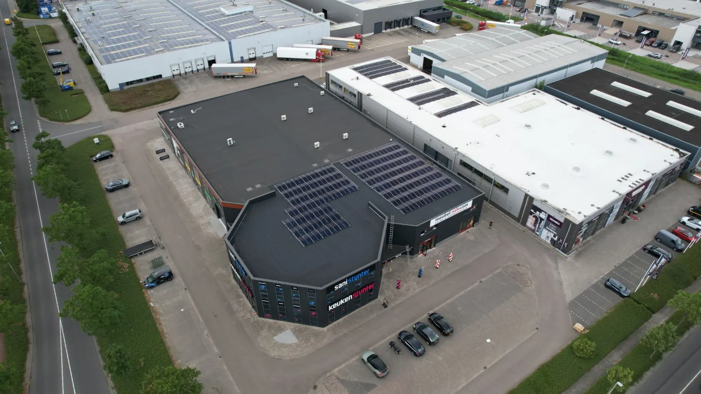

Eén energiecentrale voor meerdere gebouwen.
Een Energy Hub bundelt de gebouwen, aansluitingen en assets van een gebied tot één energiesysteem. Niet ieder pand apart tegen de grens van zijn eigen aansluiting, maar samen — met capaciteit die onderling verdeeld wordt.

De vraag groeit sneller dan de kabel.
Op een bedrijventerrein of in een gebiedsontwikkeling lopen twee bewegingen uit elkaar: wat de gebruikers erbij vragen, en wat het net erbij kan geven.
Wat de vraag opdrijft
Aan de gebruikerskant komt er alleen maar bij. En bijna alles wat erbij komt, loopt over dezelfde aansluiting.
Vervoer wordt elektrisch
Bestelbussen, vrachtwagens en personenauto's laden op eigen terrein. Elk pand wil laadpunten, en vaak op hetzelfde moment van de dag.
Verwarmen en koelen zonder gas
Warmtepompen en koeling verschuiven verbruik van gas naar stroom. Het gevraagde vermogen op de kabel neemt toe terwijl het pand zelf niet groeit.
Het gebied zelf breidt uit
Een extra unit, een volgende bouwfase of een nieuwe huurder vraagt aansluitvermogen dat op papier al vergeven is.
Waarom het net niet meegroeit
Aan de netkant is er geen knop om aan te draaien — en de manier waarop capaciteit wordt aangevraagd, werkt het gebied tegen.
Verzwaren is geen keuze
Een zwaardere aansluiting vraagt werk in de straat en ruimte op het station. In veel regio's geeft de netbeheerder dat vermogen voorlopig niet uit.
Iedereen vraagt zijn eigen maximum aan
Elk pand dimensioneert op zijn hoogste piek. Verzwaren gebeurt zo op de optelsom van al die maxima, niet op het gedeelde maximum van het gebied.
Elke aansluiting staat op zichzelf
Buurpanden kunnen geen vermogen van elkaar lenen. Capaciteit die bij de één overblijft, is bij de ander niet beschikbaar.
Een gebied als één energiesysteem.
Een Energy Hub is een gebundeld energiesysteem op gebiedsniveau: meerdere gebouwen, aansluitingen en assets worden samen aangestuurd als één lokale energiecentrale. Opwek, opslag, laden en gebouwlast horen dan bij het gebied, niet langer bij één pand.
Cable pooling: één kabel, meerdere partijen
Bij cable pooling delen meerdere opwek- of verbruikspartijen één netaansluiting. Zon, opslag en laadinfrastructuur hangen achter dezelfde verbinding in plaats van ieder achter een eigen kabel.
Ongelijktijdigheid is de winst
Pieken van verschillende gebruikers vallen niet samen; precies die ongelijktijdigheid benut een hub. Verzwaren rekent met ieders maximum, een hub met het gedeelde maximum.

Een terrein is geen optelsom van losse aansluitingen.
De panden staan naast elkaar en toch los van elkaar: eigen dak, eigen aansluiting, eigen piek. Een hub legt daar één systeem overheen — wat bij de één overblijft wordt bij de ander bruikbaar, en er wordt gerekend met het gedeelde maximum in plaats van met de optelsom van ieders maximum.

Microgrid of Energy Hub?
De twee begrippen worden door elkaar gebruikt. Het verschil zit in de schaal: één locatie tegenover een gebied.
Microgrid — één locatie
Eén gestuurd systeem op één locatie: opwek, opslag, laadpunten en gebouwlast achter dezelfde aansluiting, onder één regelaar. Wat er binnenkomt en wat er wordt gevraagd, wordt binnen de erfgrens tegen elkaar afgewogen.
Energy Hub — een gebied
Meerdere locaties of panden samen, op gebiedsniveau. De hub verbindt die systemen en aansluitingen tot één geheel, zodat capaciteit over de erfgrens heen gedeeld kan worden in plaats van per pand te worden aangevraagd.
Van losse aansluitingen naar ontwikkelruimte.
Hoe een gebied stap voor stap één systeem wordt — en wat dat aan het eind oplevert.
Meerdere gebouwen
Panden, units of woonblokken, elk met een eigen aansluiting en een eigen verbruikspatroon.
Cable pooling
Opwek- en verbruikspartijen delen één netaansluiting in plaats van ieder een eigen verbinding.
Gedeelde opwek en opslag
Zon op de daken en opslag in het gebied bedienen alle aangesloten gebruikers, niet één pand.
Ontwikkelcapaciteit
Wat door ongelijktijdigheid vrijvalt, is ruimte voor laden, warmte en de volgende fase van het gebied.
Gebieden en complexen die als één geheel zijn aangepakt.
Drie projecten waarin niet één pand maar het geheel het uitgangspunt was.
Nieuw-Schoonoord, Velp.
180 woningen als één traject aangepakt, in plaats van woning voor woning.
Woningportefeuille
Bekijk het project

Dormio Medemblik
Het hele park gebundeld achter één bouwaansluiting, met 215 kWh opslag en 219 zonnepanelen.
Bekijk het project →
Van Beethovenstraat, Nijmegen
62 woningen als één complex behandeld, met 302 panelen op de daken van het blok.
Bekijk het project →Goed om te weten.
Wat is een Energy Hub precies?
Een gebundeld energiesysteem op gebiedsniveau. Meerdere gebouwen, aansluitingen en assets worden samen aangestuurd als één lokale energiecentrale, zodat opwek, opslag en verbruik over het gebied heen op elkaar worden afgestemd.
Wat is cable pooling?
Meerdere opwek- of verbruikspartijen die samen één netaansluiting delen. In plaats van per partij een eigen verbinding gebruiken ze dezelfde kabel — en omdat ze er zelden tegelijk vol vermogen op vragen, past er samen meer achter.
Wat is het verschil met een microgrid?
Een microgrid is één gestuurd systeem op één locatie; dat is de bouwsteen. Een Energy Hub brengt meerdere locaties of panden samen op gebiedsniveau, zodat capaciteit over de erfgrens heen gedeeld kan worden.
Werkt dit ook als de panden verschillende eigenaren hebben?
Ja. Bij meerdere eigenaren ontwikkelt Vibe de structuur waarin partijen capaciteit met elkaar delen: wie wat afneemt, wie wat levert en hoe dat onderling wordt verrekend. Dat deel van het werk hoort bij de hub, net zo goed als de techniek.
Voor wat voor gebieden is dit geschikt?
Voor bedrijventerreinen, gebiedsontwikkeling, campussen en woningportefeuilles — kort gezegd overal waar panden en aansluitingen bij elkaar liggen en ieder voor zich tegen de grenzen van het net lopen.
Kijk naar het gebied, niet naar één aansluiting.
Stuur ons de panden, aansluitingen en plannen die bij elkaar liggen. Wij brengen in kaart wat er samen mogelijk is binnen de capaciteit die er al ligt — en welke structuur daarbij hoort als er meerdere eigenaren zijn.
Reactie binnen één werkdag. Vrijblijvend.